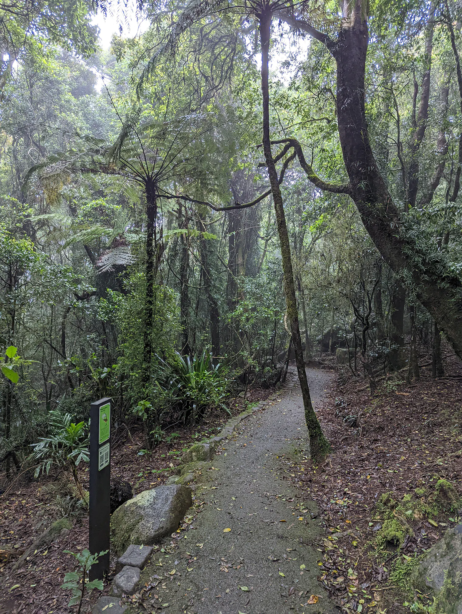
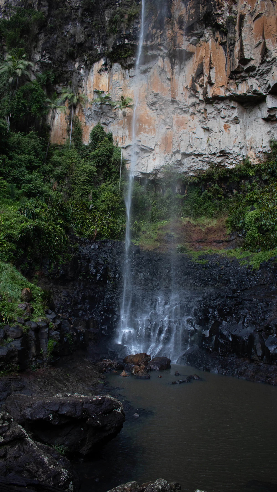
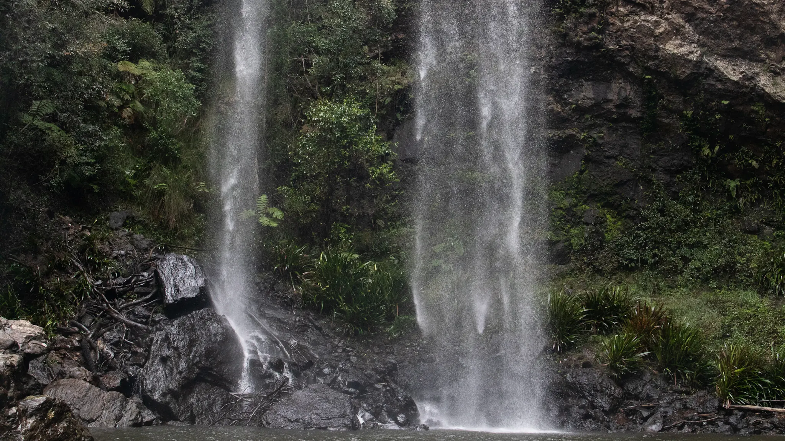
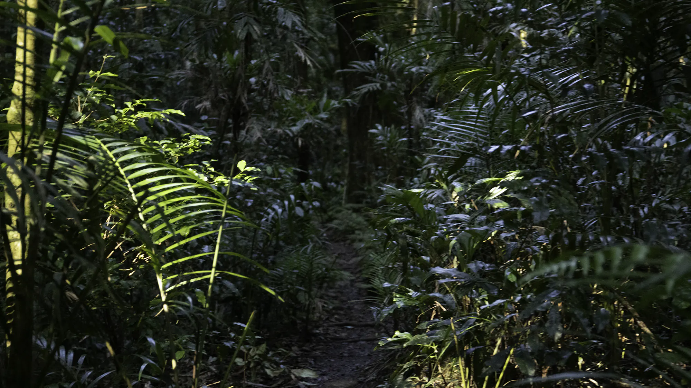
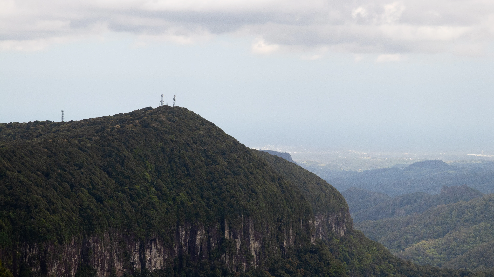
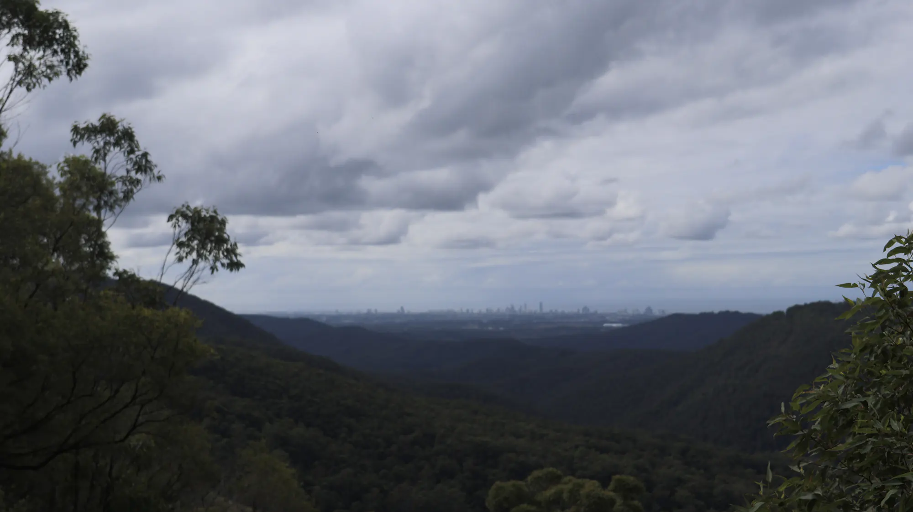

❯
Hikes

Purling Brook Falls
Purling Brook Falls is a stunning walk winding down the cliffside into a stunning waterfall.

Twin Falls
Twin Falls takes you beneath the canopy of Springbrook and behind two waterfalls.

Warrie Circuit
Warrie Circuit descends deep into some of the best rainforest scenery, waterfalls and lookouts Springbrook has to offer.

❯
Lookouts
Best of All Lookout
Best of All Lookout truly lives up to it’s name, offering stunning views into the Northern NSW hinterland and coastline.

Wunburra Lookout
Wunburra Lookout is the first lookout on the Springbrook plateau and offers stunning views over the National Park out to the Gold Coast’s iconic skyline.
Scenic Drives

Lyrebird Ridge Rd
Lyrebird Ridge Rd is a quiet but stunning narrow road that winds beneath the treetops on the way down from Best of All Lookout.
Springbrook via Advancetown
lol
lol